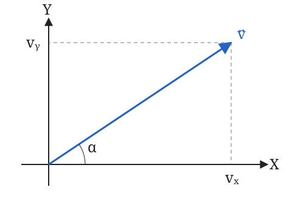

Tema 0 · Apuntes de repaso
Física y Química de 1.º de Bachillerato
Boletín de ejercicios Soluciones
1. Magnitudes, Medida y Análisis Dimensional
Una magnitud es todo aquello que puede ser medido de forma cuantitativa, como una longitud, la masa o la fuerza. Medir consiste en comparar una magnitud con otra de la misma especie (elegida arbitrariamente) llamada unidad y ver cuántas veces está contenida dicha unidad en la magnitud medida. El resultado de toda medición debe constar siempre del valor numérico y la unidad empleada.
El Sistema Internacional de Unidades (S.I.) consta de siete magnitudes fundamentales y sus correspondientes unidades de medida:
| Magnitud fundamental | Símbolo dimensional | Unidad S.I. | Símbolo de la unidad |
|---|---|---|---|
| Longitud | \(L\) | Metro | \(\text{m}\) |
| Masa | \(M\) | Kilogramo | \(\text{kg}\) |
| Tiempo | \(T\) | Segundo | \(\text{s}\) |
| Intensidad de corriente | \(I\) | Amperio | \(\text{A}\) |
| Temperatura | \(\theta\) | Kelvin | \(\text{K}\) |
| Cantidad de sustancia | \(N\) | Mol | \(\text{mol}\) |
| Intensidad luminosa | \(J\) | Candela | \(\text{cd}\) |
Análisis Dimensional
Obtener la ecuación de dimensiones de una magnitud derivada es expresar esta como producto de potencias de las magnitudes fundamentales. Para ello, se parte de su ecuación de definición hasta reducirla a sus componentes fundamentales.
\[[\text{Velocidad}] = [L\,T^{-1}] \qquad [\text{Aceleración}] = [L\,T^{-2}] \qquad [\text{Fuerza}] = [M\,L\,T^{-2}]\]
Utilidad del análisis dimensional
El análisis dimensional resulta fundamental para dos aplicaciones principales:
Determinar la unidad de medida de la magnitud considerada en el S.I.
Ejemplo: A partir de la ecuación de dimensiones de la fuerza (\([F] = [M\,L\,T^{-2}]\)) se deduce de forma directa que su unidad en el S.I. es el \(\text{kg} \cdot \text{m} \cdot \text{s}^{-2}\), combinación que recibe el nombre de newton (\(\text{N}\)). Es decir, \(\text{N} = \text{kg} \cdot \text{m} \cdot \text{s}^{-2}\).Comprobar si una ecuación es correcta o no, ya que cualquier ecuación analítica debe ser dimensionalmente homogénea; esto es, ambos miembros de la igualdad han de tener estrictamente la misma ecuación de dimensiones.
Ejemplo: Para verificar cuál de las siguientes ecuaciones de movimiento es correcta sabiendo que el primer miembro tiene como dimensión \([s] = [L]\): \[\begin{aligned} 1)\ [a\cdot t] \rightarrow [L\,T^{-2} \cdot T] &= [L\,T^{-1}] \quad (\text{Incorrecta, no homogénea}) \\ 2)\ [\,\frac{1}{2}v\cdot t^2\,] \rightarrow [L\,T^{-1} \cdot T^2] &= [L\,T] \quad (\text{Incorrecta, no homogénea}) \\ 3)\ [\,\frac{1}{2}a\cdot t^2\,] \rightarrow [L\,T^{-2} \cdot T^2] &= [L] \quad (\textbf{Correcta, cumple la condición de homogeneidad}) \end{aligned}\]
2. Magnitudes Escalares y Vectoriales
Magnitudes escalares: Son aquellas que solo requieren dar su valor numérico y su correspondiente unidad para estar correctamente especificadas.
Magnitudes vectoriales: Son aquellas que para estar correctamente especificadas requieren conocer su valor o módulo, su dirección (representada por una recta) y su sentido (representado por una punta de flecha). Se representan mediante vectores.
Álgebra Vectorial Esencial
Producto de un Escalar por un Vector
Es un nuevo vector que posee la misma dirección que el vector original. Su módulo es el producto del número real por el módulo del vector. Su sentido coincide con el del mismo si el escalar es positivo, y es el contrario si el escalar es negativo.
Suma y Resta de Vectores
Para obtener de forma gráfica la suma de dos vectores concurrentes se recurre a la regla del paralelogramo, trazando la diagonal del mismo desde el origen común. La resta se concibe como la suma de un vector con el opuesto del otro: \(\vec{B} - \vec{A} = \vec{B} + (-\vec{A})\).
Cálculo del Módulo de un Vector
A partir de las componentes ortogonales del vector en el plano (\(\vec{v} = v_x\hat{\imath}+ v_y\hat{\jmath}\)) o en el espacio de tres dimensiones (\(\vec{v} = v_x\hat{\imath}+ v_y\hat{\jmath}+ v_z\hat{k}\)), el módulo representa analíticamente la longitud geométrica del segmento orientado y se calcula mediante la raíz cuadrada de la suma de sus componentes al cuadrado: \[v = |\vec{v}| = \sqrt{v_x^2 + v_y^2 + v_z^2}\]
Cálculo de un Vector Unitario
Un vector unitario es aquel cuyo módulo es estrictamente igual a la unidad (\(1\)). Para transformar cualquier vector \(\vec{v}\) no nulo en un vector unitario \(\vec{u}\) que conserve exactamente su misma dirección y sentido, se divide el vector original entre su propio módulo: \[\vec{u} = \frac{\vec{v}}{|\vec{v}|} = \frac{v_x}{v}\hat{\imath}+ \frac{v_y}{v}\hat{\jmath}+ \frac{v_z}{v}\hat{k}\]
Determinación del Ángulo y Componentes por Trigonometría
Siempre se puede descomponer un vector en sus proyecciones ortogonales sobre los ejes \(X\) e \(Y\). El valor o módulo de estas componentes se obtiene mediante: \[v_x = v \cdot \cos\alpha \qquad v_y = v \cdot \sin\alpha\] Si queremos saber el ángulo que forma con el eje x podemos utilizar la función tangente: \[\tan\alpha = \frac{v_y}{v_x} \quad\Rightarrow\quad \alpha = \arctan\left(\frac{v_y}{v_x}\right)\]

3. Cinemática
Velocidad y Aceleración Instantáneas
Vector velocidad instantánea (\(\vec{v}\)): Se define matemáticamente como el límite del vector velocidad media cuando el intervalo de tiempo tiende a cero (derivada del vector de posición respecto al tiempo): \[\vec{v} = \lim_{\Delta t \to 0} \frac{\Delta\vec{r}}{\Delta t} = \frac{d\vec{r}}{dt} = \frac{ds}{dt}\vec{u}_t\] Donde \(\vec{u}_t\) es un vector unitario en la dirección de la tangente a la trayectoria. El vector velocidad instantánea es siempre estrictamente tangente a la trayectoria en el punto considerado.
Vector aceleración instantánea (\(\vec{a}\)): Define la rapidez con la cual varía el vector velocidad instantánea en el tiempo: \[\vec{a} = \lim_{\Delta t \to 0} \frac{\Delta\vec{v}}{\Delta t} = \frac{d\vec{v}}{dt}\]
Movimiento Rectilíneo y Uniforme (MRU)
Un cuerpo se mueve con movimiento uniforme si su vector velocidad permanece constante (\(\vec{v} = \text{cte}\)). Esto implica que el valor de la velocidad no varía y su trayectoria es una línea recta. Su ecuación de movimiento escalar es: \[s = s_0 + v \cdot t\]
Movimiento Rectilíneo Uniformemente Acelerado (MRUA)
Un cuerpo se mueve con movimiento rectilíneo y uniformemente acelerado si su aceleración es constante (\(\vec{a} = \text{cte}\)) y su velocidad inicial es nula o tiene la misma dirección que el vector aceleración. Sus ecuaciones escalares asociadas son: \[v = v_0 + a \cdot t \qquad s = s_0 + v_0 \cdot t + \frac{1}{2}a \cdot t^2\]
Composición de Movimientos
Un sistema físico puede estar sometido simultáneamente a dos movimientos independientes. El movimiento global se resuelve mediante el principio de superposición independiente en cada eje coordenado.
Tiro Horizontal
Resultante de la composición de un movimiento uniforme según el eje \(X\) y un movimiento uniformemente acelerado (caída libre) según el eje \(Y\): \[\text{Eje X:} \begin{cases} v_x = v_0 \\ x = x_0 + v_x t \end{cases} \qquad \text{Eje Y:} \begin{cases} v_y = g \cdot t \\ y = y_0 + \frac{1}{2}g \cdot t^2 \end{cases}\]
Tiro Oblicuo
Tiene lugar cuando un objeto es lanzado con una velocidad inicial \(\vec{v}_0\) que forma un ángulo \(\alpha\) con la horizontal. Sus ecuaciones de componentes cartesianas son: \[\text{Eje X:} \begin{cases} v_x = v_0 \cos\alpha \\ x = x_0 + (v_0 \cos\alpha)t \end{cases} \qquad \text{Eje Y:} \begin{cases} v_y = v_0 \sin\alpha + g \cdot t \\ y = y_0 + (v_0 \sin\alpha)t + \frac{1}{2}g \cdot t^2 \end{cases}\] Nota teórica: En el punto de altura máxima del tiro oblicuo, la componente vertical de la velocidad vale estrictamente cero (\(v_y = 0\)).
Movimiento Circular Uniforme (MCU) y Acelerado (MCUA)
Componentes Intrínsecas de la Aceleración
El vector aceleración total se divide en dos componentes ortogonales constitutivas (\(\vec{a} = \vec{a}_t + \vec{a}_n\)):
Aceleración tangencial (\(a_t\)): Mide la rapidez con la que varía el módulo del vector velocidad: \(a_t = \frac{\Delta v}{\Delta t} = \frac{dv}{dt}\).
Aceleración normal o centrípeta (\(a_n\)): Mide la rapidez con la que varía la dirección del vector velocidad: \(a_n = \frac{v^2}{R}\).
Movimiento Circular Uniforme (MCU)
La trayectoria es una circunferencia recorrida con velocidad constante en módulo. Por tanto, su aceleración tangencial es nula (\(a_t = 0\)), pero posee una aceleración normal o centrípeta constante dirigida hacia el centro de la circunferencia.
Se define la velocidad angular (\(\omega\)) como la rapidez con la que se describe el ángulo \(\varphi\) (medido en radianes): \[\omega = \frac{\Delta\varphi}{\Delta t} = \frac{2\pi}{T} = 2\pi f \qquad \longrightarrow \qquad v = \omega \cdot R\] Donde \(T\) es el periodo (tiempo en dar una vuelta) y \(f\) la frecuencia (\(f = 1/T\)). La ecuación angular del MCU es: \[\varphi = \varphi_0 + \omega \cdot t \qquad \longrightarrow \qquad a_n = \frac{v^2}{R} = \omega^2 R\]
Movimiento Circular Uniformemente Acelerado (MCUA)
La velocidad angular varía uniformemente con el tiempo a razón de una aceleración angular (\(\alpha\)) constante: \[\alpha = \frac{\Delta\omega}{\Delta t} \qquad [\text{rad/s}^2]\] Sus ecuaciones cinemáticas angulares constitutivas son: \[\omega = \omega_0 + \alpha \cdot t \qquad \varphi = \varphi_0 + \omega_0 \cdot t + \frac{1}{2}\alpha \cdot t^2\] Relaciones analíticas lineales: \(a_t = \alpha \cdot R\) y \(a_n = \omega^2 R\) (variable en el tiempo).
4. Dinámica
La Dinámica es la parte de la Física que estudia las acciones que se ejercen sobre los cuerpos y la manera en que estas influyen sobre el movimiento de los mismos. Las acciones externas se representan por fuerzas (vectores), cuya unidad en el S.I. es el Newton (\(\text{N}\)).
Leyes de Newton de la Dinámica
Primera Ley de Newton o Principio de Inercia
Si sobre un cuerpo no actúa ninguna fuerza, o todas las que actúan se anulan dando una resultante nula (\(\sum\vec{F} = 0\)), el cuerpo no variará su velocidad (si está en reposo continuará en reposo; si se mueve, lo seguirá haciendo con movimiento rectilíneo y uniforme).
Segunda Ley de Newton o Principio Fundamental de la Dinámica
Si sobre un cuerpo actúa una fuerza resultante, dicho cuerpo modificará su velocidad experimentando una aceleración directamente proporcional. Comparten la misma dirección y sentido de la fuerza neta: \[\vec{F}_{\text{res}} = m \cdot \vec{a}\] La masa (\(m\)) mide la inercia o resistencia que oponen los cuerpos a variar su velocidad.
Tercera Ley de Newton o Principio de Acción-Reacción
Si un cuerpo ejerce sobre otro una fuerza (acción), el otro ejerce sobre este una fuerza igual en módulo y dirección pero de sentido contrario (reacción). Al estar aplicadas sobre cuerpos distintos, estas fuerzas nunca se anulan entre sí.
Metodología analítica planos inclinados
Las fuerzas que forman un ángulo con la dirección del desplazamiento se descomponen sobre un eje horizontal \(X\) (paralelo a la dirección de la velocidad) y un eje vertical \(Y\) (perpendicular a la velocidad). El peso se resuelve como: \[P_x = m \cdot g \cdot \sin\alpha \qquad P_y = m \cdot g \cdot \cos\alpha\] Donde la fuerza Normal ejercida por el plano de apoyo cumple que \(N = P_y = m \cdot g \cdot \cos\alpha\).
Dinámica del Movimiento Circular Uniforme
Para describir un MCU, se requiere una fuerza neta dirigida continuamente hacia el centro de la trayectoria, denominada fuerza centrípeta (\(F_c\)), que actúe como causa de la aceleración normal: \[F_c = m \cdot a_n = m \frac{v^2}{R} = m \cdot \omega^2 R\]
5. Fuerzas de Rozamiento
Las fuerzas de rozamiento surgen por la interacción molecular entre las superficies en contacto, actúan de forma paralela al plano de apoyo y poseen siempre un sentido opuesto al deslizamiento del cuerpo.
Fuerza de Rozamiento Cinética (\(F_{rc}\))
Actúa cuando el cuerpo desliza de forma efectiva sobre la superficie. Posee un valor constante proporcional a la fuerza normal del plano e independiente de la velocidad del cuerpo: \[F_{rc} = \mu_k \cdot N\] Donde \(\mu_k\) representa el coeficiente de rozamiento cinético.
Fuerza de Rozamiento Estática (\(F_{re}\))
Aparece cuando se aplica una fuerza a un cuerpo intentando iniciar el deslizamiento. No tiene un valor definido, sino que contrarresta de forma exacta la fuerza motriz paralela al plano mientras el objeto permanezca quieto. Su umbral máximo alcanzable viene dado por: \[F_{re,\text{máx}} = \mu_s \cdot N \qquad (\text{donde } \mu_s > \mu_k)\] Condición de deslizamiento en plano inclinado: El cuerpo comenzará a deslizar de forma espontánea por la pendiente únicamente si la componente del peso supera la cota de rozamiento estático máximo, lo que se reduce a la condición: \[m \cdot g \cdot \sin\alpha > \mu_s \cdot m \cdot g \cdot \cos\alpha \quad \longrightarrow \quad \mu_s < \tan\alpha\]
6. Energía, Trabajo Mecánico y Potencia
La energía es la magnitud física que mide la capacidad de un sistema para producir transformaciones o cambios en sí mismo o en su entorno. Según la Ley de Conservación de la Energía, esta no se crea ni se destruye, únicamente se transforma de una forma a otra.
Trabajo Mecánico (\(W\))
La energía asociada a los cuerpos en movimiento es la energía cinética (\(E_c = \frac{1}{2}mv^2\)). Las fuerzas, al actuar sobre los cuerpos a lo largo de un desplazamiento, realizan una transferencia de energía denominada Trabajo mecánico (\(W\)): \[W = F \cdot e \cdot \cos\alpha\] Donde \(\alpha\) representa el ángulo formado por la fuerza y la dirección del desplazamiento.
Trabajo positivo (\(\alpha = 0^\circ \rightarrow W = F \cdot e\)): La fuerza aporta energía cinética al cuerpo.
Trabajo negativo (\(\alpha = 180^\circ \rightarrow W = -F \cdot e\)): La fuerza quita energía cinética al cuerpo, disipándola comúnmente en forma de calor al ambiente (fuerzas de rozamiento).
Trabajo nulo (\(\alpha = 90^\circ \rightarrow W = 0\)): Las fuerzas perpendiculares a la trayectoria no aportan ni restan energía al cuerpo.
El trabajo desarrollado por la fuerza resultante de varias fuerzas concurrentes es igual a la suma algebraica de los trabajos de cada una de dichas fuerzas (\(W_{\text{res}} = \sum W_i\)).
Potencia (\(P\))
Se define como la energía o trabajo transferido por unidad de tiempo: \[P = \frac{E}{t} = \frac{W}{t} \qquad [\text{Vatio, W} = \text{J/s}]\] En la práctica de la ingeniería se emplea frecuentemente el Caballo de Vapor (\(\text{CV}\)), cuya equivalencia de conversión es: \[1 \text{ CV} = 735 \text{ W}\]
7. Fuerzas Conservativas y Energía Potencial
Las fuerzas que cuando quitan energía cinética a un cuerpo la almacenan de forma reversible como energía potencial (\(E_p\)) en lugar de transformarla en calor irrecuperable reciben el nombre de fuerzas conservativas (ej. la gravedad o las fuerzas elásticas).
El trabajo realizado por una fuerza conservativa cumple rigurosamente que: \[W_{\text{cons}} = -\Delta E_p = -(E_{p2} - E_{p1})\] El trabajo de las fuerzas conservativas posee la propiedad fundamental de no depender del camino geométrico recorrido entre el punto inicial y el punto final.
Energía Potencial Gravitatoria
Es la energía potencial debida a la acción del campo gravitatorio en función de la altura (\(h\)): \[E_p = m \cdot g \cdot h\]
Conservación de la Energía Mecánica
Definiendo la energía mecánica (\(E_m\)) como la suma de la energía cinética y potencial (\(E_m = E_c + E_p\)), cuando la única fuerza que realiza trabajo sobre el sistema es de carácter conservativo, la energía mecánica permanece estrictamente constante: \[E_{c1} + E_{p1} = E_{c2} + E_{p2}\] Si actúan fuerzas no conservativas (como el rozamiento), el balance general energético responde a: \[E_{m2} = E_{m1} + W_{\text{roz}} \quad \longrightarrow \quad (E_{c2} + E_{p2}) = (E_{c1} + E_{p1}) - F_{rc} \cdot e\]
Estudio Energético del Movimiento Armónico Simple (MAS)
La fuerza elástica recuperadora es de carácter conservativo. Su trabajo asociado determina la energía potencial elástica del muelle en función de su elongación o deformación \(x\): \[E_p = \frac{1}{2}k \cdot x^2\] La energía cinética de un oscilador armónico en función de su elongación responde a la expresión: \[E_c = \frac{1}{2}m \cdot \omega^2 (A^2 - x^2)\] Sumando ambas expresiones (donde \(k = m \cdot \omega^2\)), se demuestra la interconversión perfecta de ambas energías, manteniéndose constante la energía mecánica total en función de su amplitud máxima \(A\): \[E_m = E_c + E_p = \frac{1}{2}k \cdot A^2 = \text{constante}\]